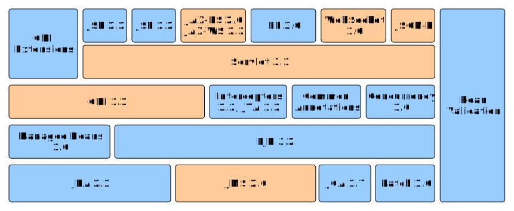
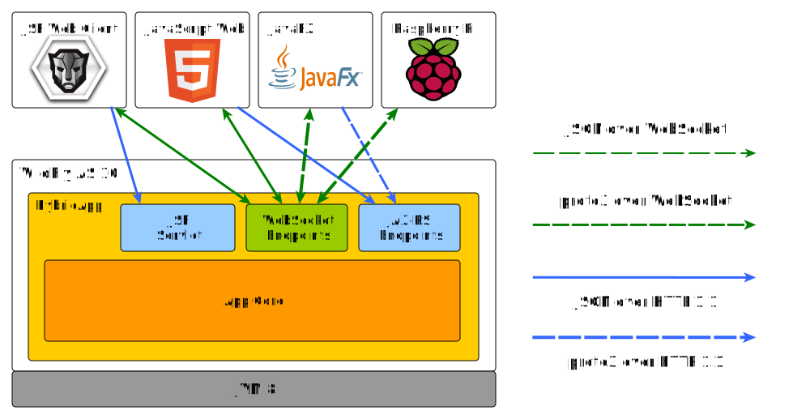
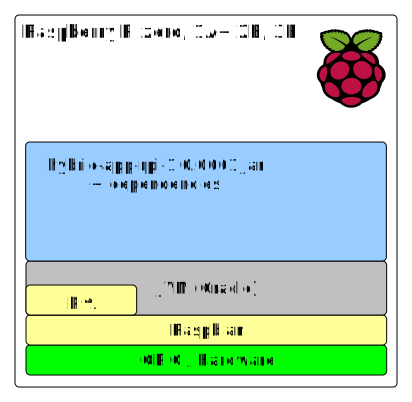
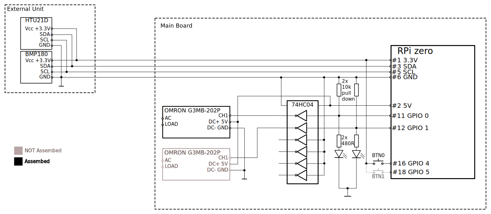

JEE7 Real-Time
(web) applications
Juraj VeverkaJava and JEE developer with 10+ Years experienceParticipated on many international projects Participating on solution architecture designs Solutions based on WildFly / Jetty ... Raspberry PI and IoT enthusiast |
JEE apps are usually ...
- Transactional -
- Request/Response -
- DB centric -
- Web Interface - server side rendering.
- Monolithical - single or few war/ear.
JEE apps might be also ...
- Reactive -
- Responsive - low latency responses
- Effective - better http stack utilization
- Versatile - support different client technologies
JEE Technologies for Real-Time apps
- JEE7 Technologies for real-time app development
- WebSockets, HTTP protocol upgrade
- JMS, CDI Events, Async REST
- Client technologies
- JSF, JavaScript, JavaSE
- JEE7 and beyond, extend classical JEE7 apps.
- Demo: WildFly, JSF, JavaScript, JavaFx, IoT device
- What's planned in JEE8
Real-Time application ?
- Continuous communication with server during user's session.
- Backend - JEE7 server
- Suitable JEE technologies for JavaSE/JavaFX clients
- CDI events
- JMS
- Remote EJB calls
- Suitable JEE technologies for HTML5 clients
- JAX-RS - REST APIs
- WebSockets
- JSF - Java Server Faces
JEE technologies for HTML5 clients
- Servlet 3.1 - Asynchronous processing, JSR340
- Servlet 3.1 - Protocol upgrade, JSR340
- JAX-RS 2.0 - REST APIs, JSR339
- WebSockets 1.0 - JSR356
- JSF 2.2 - Java Server Faces, JSR344, kind of suitable ...
JEE7 technologies
HTTP protocol upgrade
- Servlet 3.1 - Protocol upgrade
- Full duplex communication using own protocol
- Handshake - protocol negotiation
- Full duplex TCP connection
- Close from client or server
- Demo on Github: TODO
- WebSocket is based on HTTP protocol upgrade
HTTP protocol upgrade
1. Implement your HttpUpgradeHandler
public class CustomProtocoloUpgradeHandler implements HttpUpgradeHandler {
@Override
public void init(WebConnection wc) {
//handle read/write messages
}
@Override
public void destroy() {
}
}
HTTP protocol upgrade
2. Use your HttpUpgradeHandler in servlet
@WebServlet(urlPatterns = { "/customProtocolEndpoint" })
public class ProtocolUpgradeServlet extends HttpServlet {
@Override
public void doGet(HttpServletRequest request,
HttpServletResponse response) {
String protocolName = request.getHeader("Upgrade");
if (MessageUtils.PROTOCOL_NAME.equals(protocolName)) {
response.setStatus(101);
response.setHeader("Upgrade", MessageUtils.PROTOCOL_NAME);
response.setHeader("Connection", "Upgrade");
request.upgrade(CustomProtocoloUpgradeHandler.class);
}
}
}
WebSockets
- WebSocket API - W3C
- WebSocket MDN - API and method overview.
- IETF - RFC-6455
- JSR 356 - Java API for WebSocket
Is HTTP a problem !?
- HTTP is good for client-initiated requests
- HTTP is half-duplex
- HTTP is verbose, complex, resource-wasteful
- Common hacks for ServerPush
- Polling
- Long Polling
- Comet / Ajax
- SSE - Server Sent Events
HTTP optimization
- Google Protocol Buffers
- To speed up HTTP communication
- Better/Faster for serialization of structured data
- Supported languges - C++, C#, GO, Java, Python, Ruby, ...
- Instead sending JSON/XML as payload, send smaller packets.
- Faster serialization
- Faster deserialization
JAX-RS with protocol buffers
- Install protoc or use mvn or gradle plugins
- Write your protocol in proto3 language
- Compile .proto file into java using protoc
- Implement JAX-RS provider for writing/reading messages
- Use compiled java protocol and provider on server and client
JAX-RS with protocol buffers
- Simple demo endpoints
http://.../data/getAllUsershttp://.../data/getUserByName?userName=john- Comlete demo sources on Github: TODO
JAX-RS with protocol buffers
1. Write your protocol in proto3
syntax = "proto3";
package users;
option java_package = "itx.protobuffers.common";
option java_outer_classname = "UsersProtoc";
message User {
string userName = 1;
string email = 2;
string note = 3;
}
message UserList {
repeated User user = 1;
}
JAX-RS with protocol buffers
2. Create JAX-RS Provider for reading and writing
@Provider
@Produces("application/protobuf")
@Consumes("application/protobuf")
public class ProtoBufferProvider implements MessageBodyReader, MessageBodyWriter {
@Override
public void writeTo(Object t, Class type, Type genericType, Annotation[] annotations, MediaType mediaType,
MultivaluedMap httpHeaders, OutputStream entityStream) throws IOException, WebApplicationException {
...
}
@Override
public Object readFrom(Class type, Type genericType, Annotation[] annotations, MediaType mediaType,
MultivaluedMap httpHeaders, InputStream entityStream) throws IOException, WebApplicationException {
...
}
}
JAX-RS with protocol buffers
3. Create JAX-RS endpoint
@Path("data")
public class ProtoBufferService {
@GET
@Produces("application/protobuf")
@Path("getAllUsers")
public Response getAllUsers() {
return Response.ok(dataService.getAllUsers()).build();
}
@GET
@Produces("application/protobuf")
@Path("getUserByName")
public Response getUserByName(@QueryParam("userName") String userName) {
User user = dataService.getUserByName(userName);
return Response.serverError().build();
}
}
JAX-RS with protocol buffers
4. Create JAX-RS client
public static void main(String[] args) {
Client client = ClientBuilder.newBuilder()
.register(ProtoBufferProvider.class)
.build();
WebTarget target = client.target(config.getServiceURLUserList());
Builder builder = target.request();
UserList userList = builder.get(UserList.class);
}
WebSockets is solution
- TCP based, bi-directional, full-duplex messaging
- Dramatic reduction in network latency and traffic.
- WebSocket frame is just 2 bytes overhead.
- Good adoption by majority of web browsers.
- Mature JavaScript API.
- Supports HTTP proxies, filtering, authentication.
WebSocket protocol
WebSockets with protocol buffers
Communication patterns
- Simple set of data values
- Display set of immutable data values
- Sensor data, statisctics, ...
- Data series
- Time series data
- Time charts, ...
- Client query results
- Results from database based on user query
- Combination of above
Communication protocols
- Clients using REST APIs
- Clients using REST APIs and WebSocket connections
- Clients using only WebSocket connections
- Web Browser clients - JSON
- Other clients - JSON / XML / Protocol buffers
Session synchronizations
- For clients using HTTP sessiion and WebSockets
- HttpsSession is usually bound to user identity
- Disconnect WebSockets on http session timeout
Future improvements in JEE8
- JEE8 standard - Q3/2017
- Servlet 4.0, HTTP/2
- HTTP/2 -
- Server Sent Events - MediaType.SERVER_SENT_EVENT JAX-RS 2.1
- Asynch CDI events ?
- ALPN - Application Layer Protocol Negotioation
- ActiveMQ-MQTT bridge ?
- AMQP Link
JEE8 - Roadmap
- As presented at JavaOne
- 2017 - Finalize JEE8 specs
- 2018 - Finalize JEE9 specs
- JEE8 & JEE9 - focus on cloud and micro-services.
Emerging technologies
Not part of JEE7, maybe later ...- http://socket.io ??
- coherenceRx ??
- gRPC + HTTP 2 - nex gen REST APIs, based on Protobufs
- Gluon - JavaFx for on Android and iOS
Demo: Hybrid Application
Demo: Hybrid Application
- Clients
- JSF - PrimeFaces UI
- JavaScript - Bootstrap, Angular2, ...
- JavaFx - JVM fat client, UI
- RPi - JVM client, WS only
- Backend
- JEE7 - single war deployed in WildFly 10 AS
Demo: Hybrid Application
Communication protocols:- Web Browsers - JSON over HTTP 1.1
- JSON over HTTP 1.1
- JSON over webSocket
- JVM clients
- proto3 over HTTP 1.1
- proto3 over WebSocket
- may use JSON as well
- proto3 - C#, Python, Ruby ... clients !
Demo: Hybrid Application
Raspberry PI stack:
Demo: Hybrid Application
Raspberry PI schematics:
JEE7 Real-Time apps - wrap up
Backup Slides
Backup #01
References
- The Reactive Manifesto - principles of reactive systems
- Google Protocol Buffers - efficient message transport
- Reveal JS - made this presentation possible, thanx!
- yEd - diagram and graph editor